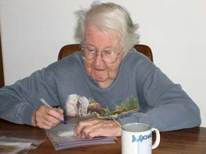

Simple Ideas For Sustainable Living
A voluntary simplicity class inspired us to live a greener urban lifestyle.
By Penni Duncan
December 2007/January 2008
I live in Colorado Springs, Colo., and there are many venues here that offer different kinds of classes. One day, almost 10 years ago, a friend asked if I’d like to join a voluntary simplicity study circle. It sounded interesting, so I decided I would, even though I didn’t know the first thing about it.
The class was a Northwest Earth Institute course that was put on by Pikes Peak Justice and Peace Commission, and it required a three-hour commitment every week for eight weeks. That class opened my eyes to what an individual can contribute to the health of our planet.
Since then, my husband, Scott, and I have slowly changed our habits. It’s been an ongoing process, and we do a little at a time. But support from others in my voluntary simplicity group has made it easier. At the beginning, they taught me about things like the benefits of locally grown and organic food. Many of us are still in touch, and we regularly meet for potluck and game nights. We call ourselves the “simple friends.”
Sustainable living can be a challenge, and it’s twice as challenging for me because I have cystic fibrosis, which has reduced my lung capacity by half. This affects my energy level and requires me to complete five hours of self care and treatments every day. Scott works full time.
Many of the choices we’ve made have been affected by my physical limitations. For example, with my level of stamina, I can’t maintain a large garden. But I can do numerous smaller jobs - such as painting, housework, hanging shelves, refinishing furniture and cooking from scratch - so many of the projects I’ve taken on have been those that don’t require a lot of physical strength.
A Right-sized House
When we first got excited about sustainable living, one of the biggest changes we made was moving into a smaller house. Previously, we lived in a large house that we realized did not fit our personalities or lifestyle. We now live in a 1928 two-bedroom bungalow in the heart of Colorado Springs.
We sold or gave away most of our furnishings as we found secondhand items that better fit our small house. Colorado Springs has many thrift stores, so now we “rent” our clothing and furnishings: We purchase them from the thrift stores and donate them again when they’re no longer needed.
When we want to take on large projects at home, we hire local contractors. In our city we have many choices. An added benefit of hiring help for these projects is that it gives both the contractors and me an opportunity to learn about different sustainable building products and practices. For example, our newly finished basement has cork flooring in the TV room. In the laundry room/bathroom we put in tile from a resale store, and we also installed a dual flush toilet that conserves water.
We love our location. It is “10 minutes from everywhere.” In fact, Scott’s office is even closer - it’s only two miles from our house. He still usually drives to work because his meetings take him all over town. We lived with one vehicle for a year, and during that time I took advantage of our bus system and the three different routes that run close to our house. I still take the bus from time to time, but we did eventually decide to buy a second car. We chose a hybrid to support the new technology.
I walk, bike and study Tai Chi for my health - my Tai Chi teacher is one of the simple friends and lives nearby. There are three parks and a bike trail within six blocks of our home. My bike’s name is Bonnie. I run errands with “Bonnie blue bicycle” whenever I can. The library and bank are both in close proximity, and I chose my beautician and various therapists and healers because they all are within easy walking and biking distance.
Family and Community
Our neighborhood was built in the 1920s and ’30s, and it boasts the oldest grocery store in Colorado Springs. No two homes are alike. There are no covenants, so houses of every color greet me while walking or biking. It’s like a box of crayons: red, yellow, purple, green, brown and white. I also like the large, established trees that are part of this neighborhood.
I’ve met many neighbors along the way. In our previous neighborhood, I didn’t know anyone, even though I walked by the same houses every day. The neighbors just weren’t outside. This neighborhood is more at ease with itself. People are more likely to be outside and willing to chat.
My husband and I met our backdoor neighbor while out for a stroll one evening. On subsequent meetings we learned about each others’ occupations and families. As we got to know each other, we did favors and ran errands for each other. In fact, she let us live with her for three days, while our floors were being refinished. She even invited our cats to stay!
One day I gave her a ride to her car, which was in the shop. I said to her, “Your house is so fabulous. I would buy it for my mom, if you ever decided to sell.” She replied, “I am selling it! I need to be closer to my job.”
With much excitement, I made two phone calls, the first to my mother. I asked, “Mom, the house behind me is for sale. Would you like to live close to me someday?” She was surprised and said, “Of course.” But I knew that Mom wouldn’t be moving anytime soon because when she retired, she left the city and moved closer to my grandmother to care for her. So second, I called a couple who were part of the simple friends group. After looking at my neighbor’s house, they were charmed and said they would be comfortable renting from us. With everyone on board, we bought the house. Someday it’ll be there when Mom wants to move in, but until then we’re happy to rent it out.
Our renter friends have been wonderful. We share rides, chores, tools and dinners. A month after our renters moved in, I had a simple friends potluck, and we built a gate between our two back yards. Mom teases the renters when she visits, and asks “How is my future home?” We miss the previous neighbor for the same reason we love our current neighbors: the sense of community.
As I’ve befriended other neighbors, we’ve had garage sales, decorated, hunted for wild asparagus, subscribed to a Community Supported Agriculture (CSA) group, painted, hauled firewood, swapped plants and cleaned up the park together. The idea of “intentional community” I learned about in the voluntary simplicity course and dreamed of belonging to has quickly materialized around me.
Simple Green Projects
Local and Organic Food. Much of our produce comes from the organic CSA we patronize. This farm also offers eggs, chicken and pork. My favorite Christmas photo of all time came from farmer Ryan - a picture of his chickens! His wife and other volunteers deliver to our city once a week. They deliver weekly at a farmers market less than two miles from where we live.
For our other food needs, there are many locally owned natural grocers, and two national natural grocery chains. It took me a long time to decide to buy strictly organic food, but I’m finally satisfied that the benefits outweigh the cost. It is encouraging to see that the major grocers have started to carry organic products, too. My mother and grandmother both garden, and they freeze and can their excess produce, so we gave our underutilized freezer to my mother. In return, she gives us frozen produce to take home when we visit her.
Composting. Scott had reservations about composting. He didn’t want to see it, smell it or attract rodents. I didn’t either! So we tried a couple of different systems until we found one that worked for us. I first tried worms in a wooden container, but the container wasn’t big enough for the vegetable peelings, and within two weeks, the bin had a million fat happy worms working as fast as they could, but not keeping up with my supply. I passed the worms on to a friend with kids.
After some trial and error, I’ve found that a compost pile that doesn’t require turning works best for me. I simply bury the fresh veggie scraps in a different part of the pile each time. I bury the scraps deep enough that smell and pests haven’t been a problem. To hide the compost pile, my neighbor and I built a stone retaining wall, less than 3 feet high. In front of the wall is a sloping mound covered in xeriscaped mulch and plants.
Xeriscaping. One of our simple friends is a master gardener, and she helped us replace the lawn with xeriscaping - landscaping for dry climates designed to need minimal water. Our friend showed us how to use cardboard and newspaper for weed barriers, and over two summers we converted our lawn to mulch and drought tolerant plants. We hired two neighbor boys to do the heavy work after their parents suggested the idea when we ran into them at a garage sale.
Scott is thrilled not to have to water or mow a lawn. We don’t even have a lawn mower anymore. While walking one day, I happened upon a neighbor working on a mower. As we talked of mowers, I told him we had no use for ours since we had converted the lawn. He came right over and bought it!
I took ideas from neighbors who had already xeriscaped their yards. Several people in my neighborhood have raised beds by the sidewalk, and they plant them with pumpkins and herbs. I love the idea of putting in beautiful plants that also have edible value. It’s something I hope to do in the future.
Energy-efficient Products. We have slowly replaced our windows, water heater, furnace, washing machine and dishwasher with energy-efficient models. Our water heater is a tankless “on-demand” model. The washing machine is a front loader, and the dishwasher is a super water and energy saver. We received a rebate from Colorado Springs Utilities for the washing machine. They also gave us a rebate for adding insulation to our attic.
Recycling. The one thing we had been doing all along was recycling. Most of the local waste removal companies recycle glass, plastic and newspaper. When we started recycling cardboard, junk mail, magazines and Styrofoam as well, I found a recycling facility that accepts all of them and started hauling it myself.
Simple Choices
I'm convinced there are many easy actions nearly anyone can take to live more sustainably. Some projects may take more time and energy, but weaving them into life is satisfying. I enjoy stretching my brain by thinking through the options and learning about alternatives. Scott and I make joint decisions on big projects, and I have free reign on small ones.
Choosing to live more sustainably requires trial and error. Sometimes we make slow progress and sometimes there are quick results. But opportunities always present themselves to learn, be inventive, teach and play. Who knows, maybe 10 years from now we will have wind turbines, passice and active solar, plus geothermal heating working into the mix!
|
ISTOCKPHOTO/DAN WOOD Colorado Springs, Colo. |
COURTESY PENNI DUNCAN Scott and Penni Duncan |
 COURTESY PENNI DUNCAN Penni and Scott replaced their lawn with landscaping better suited to a dry climate. |
|
COURTESY PENNI DUNCAN A front-loading washer uses less energy. |
COURTESY PENNI DUNCAN Penni and Scott’s “right-sized” home. |
COURTESY PENNI DUNCAN A look at the neighborhood. Across the street, pumpkins grow on the corner. |
|
COURTESY PENNI DUNCAN Other participants in Penni’s voluntary simplicity group taught her the benefits of eating local and organic food.
|
COURTESY PENNI DUNCAN Penni and Scott subscribe to a local CSA. |
COURTESY PENNI DUNCAN Penni’s mother prepares produce for winter storage. |
|
 COURTESY PENNI DUNCAN Penni’s grandmother helps label bags for preserving produce . |
COURTESY PENNI DUNCAN Penni and her mother with a freezer now fully stocked with homegrown and local produce. |
|